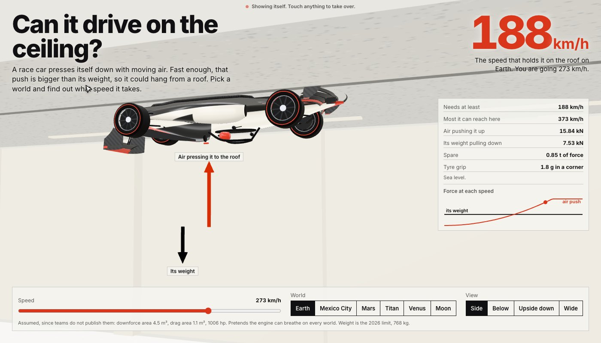
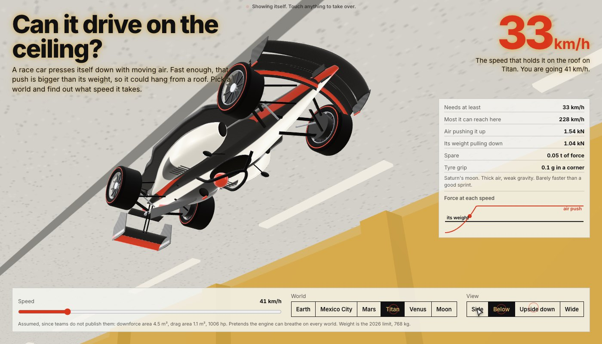
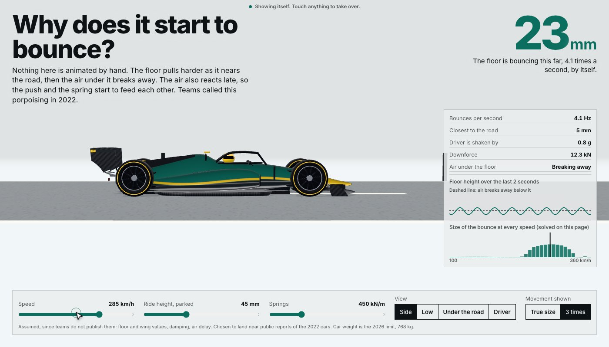
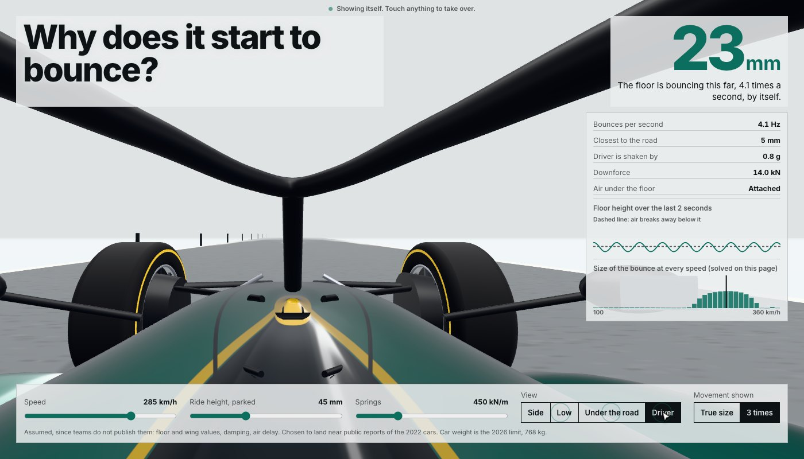
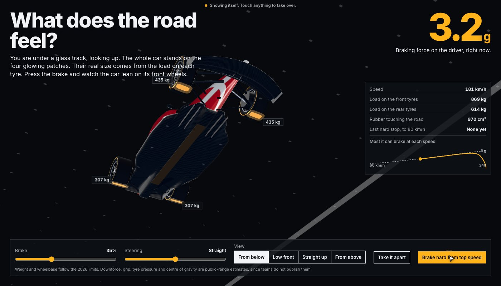
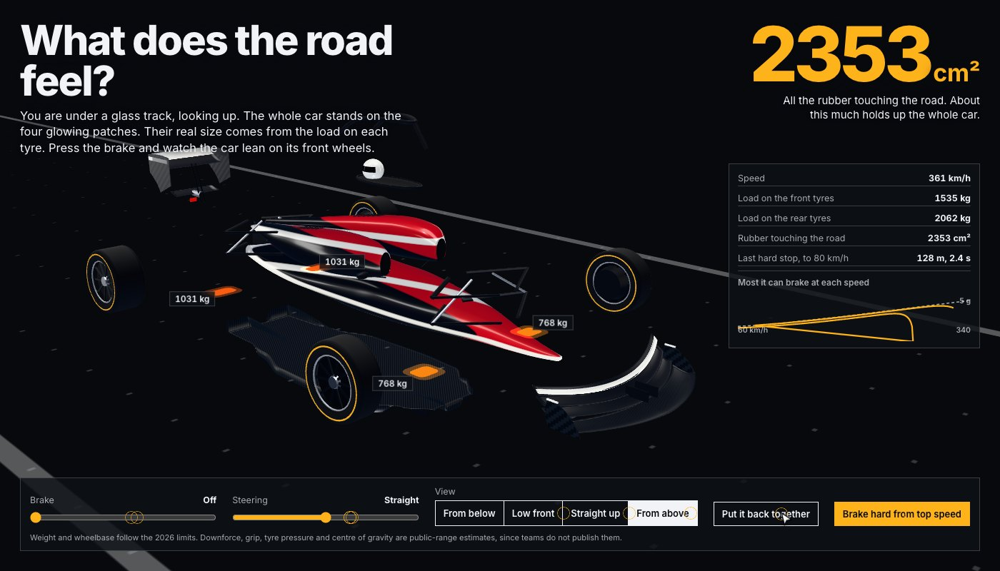
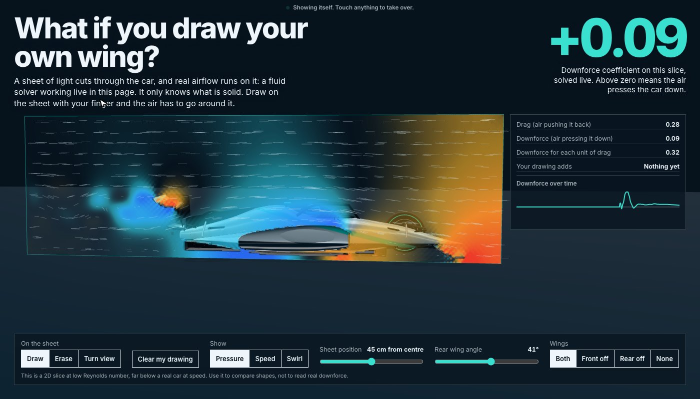
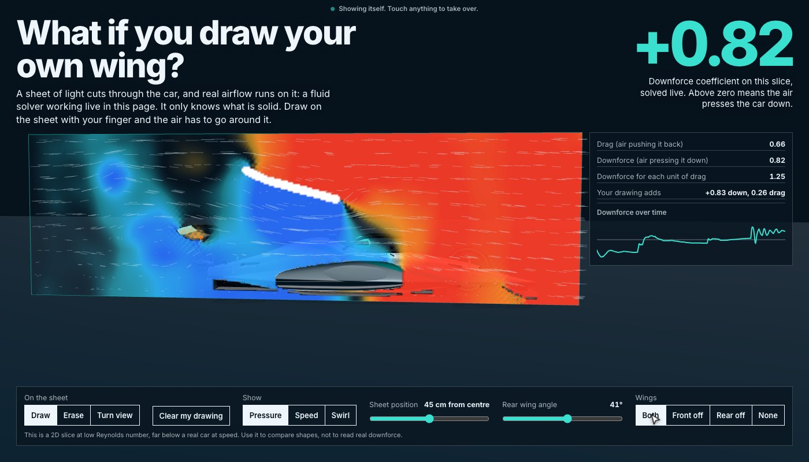

Each model tours itself. Touch anything to take over. Full screen works best, and a phone works upright.
What I tried
Teardown is a Claude Code skill that turns a machine into a 3D simulator you can take apart. I built one original car from code, using the 2026 limits, then asked it four questions. Every number on screen comes from the same maths that moves the car.
- Ceiling. Can it drive on the ceiling? On Earth it needs 188 km/h. On Titan just 33. On Venus 25, but drag stops it at 99. On the Moon, never.
- Bounce. Nothing is animated by hand. The floor stalls, the air reacts late, and the car starts to shake by itself at about 245 km/h. Raise it or stiffen it and the shake goes away.
- Glass Road. You look up through a glass track at the four patches of rubber holding the car. Brake from 340 km/h and watch the load move.
- Wind. A real fluid solver runs on a sheet through the car. Draw on it and the air goes around your drawing. With no wings the car lifts. One drawn line took it from +0.11 to +0.77.
Downforce, grip and damping are estimates, since teams do not publish them, and each page says so. Wind is a 2D slice for comparing shapes, not for reading real downforce. On Mars the speed needed is faster than sound there, so that sum stops being reliable.
Short film, no sound
Pictures







